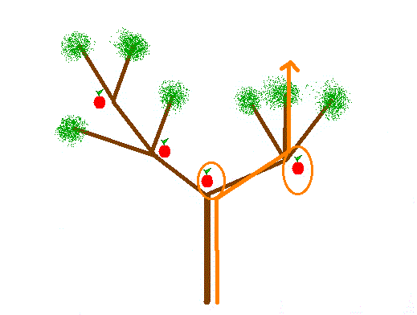
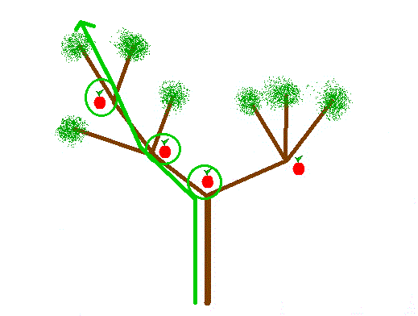
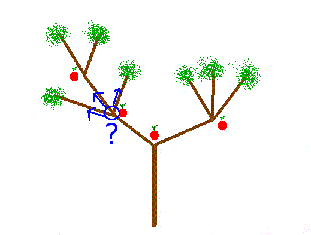

La récursivité est un concept général qui peut être illustré dans (quasiment) tous les langages de programmation, et qui peut être utile dans de nombreuses situations.
Pour lire ce tutoriel, vous devez un peu connaître au moins un langage de programmation, et avoir bien compris le mécanisme de déclaration et d'utilisation des fonctions.
J'ai conçu ce tuto dans une optique "progressive" : le début explique l'idée de base et ne nécessite aucun prérequis (à part ceux énoncés ci-dessus), mais le tuto dans son ensemble va assez loin, et met en avant une approche "abstraite" qui ne sera pas forcément évidente à la première lecture.
Pour accompagner cette approche progressive, les différents exemples du tuto ne seront pas tous écrits dans le même langage. Les premiers exemples utiliseront le langage PHP, parce que je pense que c'est celui que le plus de zéros connaissent, mais ils seront compréhensibles même par quelqu'un qui n'aurait fait que du C. Les exemples des parties plus poussées utiliseront un langage plus adapté à la récursion, OCaml. Cependant, il ne sera pas nécessaire de connaître ce langage pour les lire, car ils resteront simples et seront (enfin j'espère) soigneusement expliqués.
La définition la plus simple d'une fonction récursive est la suivante : c'est une fonction qui s'appelle elle-même. Si dans le corps (le contenu) de la fonction, vous l'utilisez elle-même, alors elle est récursive.
La fonction factorielle
L'exemple habituel est la fonction factorielle. Cette fonction, provenant des mathématiques (et très utilisée dans certains domaines mathématiques) prend en entrée un entier positif, et renvoie le produit des entiers inférieurs jusqu'à 1, lui compris : fac(n) = n * (n-1) * \dots * 1
Par exemple la factorielle de 4 est 4 * 3 * 2 * 1 = 24 (attention, cette fonction donne très vite des résultats très grands !).
Voici une définition non-récursive de la fonction factorielle, en PHP :
La méthode de calcul est assez simple : on déclare une variable $resultat, qui contiendra à la fin le résultat (la factorielle de $n), et qui vaut 1 au départ. Pour chaque entier $i entre 1 et n, on modifie le résultat en le multipliant par l'entier. Le résultat vaudra donc 1, puis (1 * 2), puis (1 * 2 * 3), ... jusqu'à (1 * 2 * 3 * ... * $n). On pourrait se passer de la variable $i en diminuant à la place la variable $n directement (on s'arrête quand elle vaut 1) mais c'est moins clair et ça ne simplifie pas véritablement la fonction.
Je vais maintenant vous présenter une définition récursive de la fonction factorielle. Elle est basée sur l'idée suivante :
<?php
function fac($n)
{
if ($n == 1) return 1;
return $n * fac($n - 1);
}
?>
Si vous avez compris l'équation au-dessus, vous verrez que le code la transcrit exactement (on dit que fac(1) = 1, et que fac($n) = $n * fac($n-1)). Si vous voulez comprendre exactement comment on arrive au résultat, vous pouvez "jouer à l'interpréteur PHP" : il s'agit d'exécuter mentalement ce code sur un petit exemple (par exemple 3) en suivant toutes les étapes, comme le ferait un véritable interpréteur de PHP, pour voir comment la fonction marche.
fac 3 :
3 ne vaut pas 1, donc je continue
j'ai besoin de fac(n-1) : je calcule fac(2) :
2 ne vaut pas 1, donc je continue
j'ai besoin de fac(n-1) : je calcule fac(1) :
1 vaut 1, donc fac(1) renvoie 1
fac(1) vaut 1, donc fac(2) renvoie 2 * fac(1) = 2 * 1 = 2
fac(2) vaut 2, donc fac(3) renvoie 3 * fac(2) = 3 * 2 = 6
Comme vous pouvez le voir, en exécutant le code PHP "dans ma tête" j'ai dû appeler plusieurs fois la fonction fac, et à chaque fois j'ai interrompu le calcul en cours (d'abord celui de fac(3), puis celui de fac(2)) pour calculer le résultat de fac(n-1), avant de revenir au calcul en cours (multiplier par n, puis renvoyer le résultat).
Avec l'habitude, ce fonctionnement devient tout à fait naturel. Ce qui est intéressant, c'est que le code de la version récursive est beaucoup plus simple que l'autre (on parle souvent de "fonction itérative" pour les fonctions non-récursives). En plus d'être plus courte (moins de mots), la version récursive utilise moins de concepts : pas de variables temporaires, pas de boucle, etc. Une fois le problème de manque d'habitude surmonté, vous vous rendrez très vite compte que dans certains cas, les fonctions récursives sont très intéressantes.
L'appel fac($n - 1), à la ligne 5, appelle la fonction qui est en train d'être définie. On parle d'appel récursif.
Une dernière remarque pour finir : par convention, la définition mathématique de la fonction factorielle précise que la factorielle de zéro est 1. Pour respecter cette convention, il suffit de changer le test if ($n == 1) en if ($n == 0). Si vous n'en êtes pas convaincu, exécutez le code dans votre tête ^^
Point de vocabulaire
Quand on parle des fonctions récursives, on utilise en général deux termes : récursivité et récursion. Lequel faut-il utiliser ? D'après les dictionnaires, les deux termes sont à peu près synonymes, récursivité étant plus souvent employé. Cependant, on peut faire une nuance entre les deux ; je le fais, ainsi que la plupart des programmeurs français que je connais. On considère en général que récursivité concerne le principe général ("la récursivité c'est pratique !"), alors que récursion désigne l'action concrète de l'appel récursif ("avec cet argument, ma fonction fait 127 récursions !", "la récursion de cette ligne n'est pas tail-récursive"). Si vous voulez, c'est un peu la même différence qu'entre "égalité" et "égalisation", "généralité" et "généralisation", ou "propreté" et ... "nettoyage". :pirate: Cette nuance, assez floue (et souple), n'est pas obligatoire ; je ne promets pas de la respecter à la lettre dans la suite du tutoriel. Cependant, ça peut toujours être pratique de pouvoir faire la différence entre deux termes un peu trop proches.
Un programmeur doit écrire une fonction récursive quand c'est la solution la plus adaptée à son problème. La question peut donc se reformuler ainsi : à quels problèmes les fonctions récursives sont-elles adaptées ?
Les fonctions que l'on code servent en général à résoudre des problèmes. Le problème que résout la fonction factorielle est « étant donné un nombre, quelle est la valeur de sa factorielle ? » (ce problème se rencontre dans certains algorithmes numériques, comme le calcul approché de fonctions).
Les fonctions récursives sont des fonctions qui s'appellent elles-mêmes. Elles doivent donc résoudre des problèmes qui "s'appellent eux-mêmes". Dans certains d'entre eux, la solution du problème général demande la résolution de plusieurs sous-problèmes particuliers, qui sont semblables au premier problème. Par exemple, on peut dire que pour résoudre le problème « combien vaut la factorielle de 4 ? » , il faut résoudre le problème « combien vaut la factorielle de 3 ? » .
Exemple
Voici un exemple de problème : je dispose d'une liste de joueurs d'un jeu à deux joueurs (échecs, ping-pong, etc.), et je veux créer une liste de matches, de telle sorte que chaque joueur joue contre tous les autres joueurs une seule fois.
Il existe de nombreuses manières d'envisager le problème. On peut remarquer que si on a une liste de 4 joueurs, on peut résoudre le problème en connaissant une liste de matchs pour les 3 premiers joueurs seulement : on prend cette liste, et on y ajoute un match entre le quatrième joueur et chacun des trois autres. Ainsi, j'ai ramené le problème (obtenir une liste des matchs entre tous les joueurs) à un sous-problème plus simple : obtenir une liste des matchs entre tous les joueurs, sauf un.
Voici un algorithme en PHP permettant de résoudre ce problème de manière récursive :
<?php
function matches($joueurs)
{
/* s'il n'y a qu'un seul joueur, on n'organise aucun match */
if (count($joueurs) <= 1)
return array();
/* on enleve le dernier joueur de la liste, et on demande les matchs sans lui */
$dernier_joueur = array_pop($joueurs);
$matches = matches($joueurs);
/* on rajoute un match entre lui et tous les autres joueurs */
foreach ($joueurs as $autre_joueur)
$matches[] = array($autre_joueur, $dernier_joueur);
/* on le remet dans la liste des joueurs, et on renvoie la liste des matchs */
array_push($joueurs, $dernier_joueur);
return $matches;
}
?>
Cette méthode pour générer une liste de matchs est encore plus efficace si l'on utilise pour la liste des joueurs une structure de données plus adaptée (une liste). Vous verrez comment utiliser des listes plus tard (quand j'utiliserai un langage plus civilisé que le PHP).
La méthode structurelle
Comment écrire une fonction récursive ?
Une fois qu'on a repéré que le problème que l'on doit résoudre se prête bien à l'utilisation d'une fonction récursive, il ne reste plus qu'à écrire la fonction. Est-ce si simple ?
Écrire une fonction n'est jamais aussi simple qu'on pourrait le croire (on a toujours des surprises), mais la structure très nette des problèmes propres à la récursivité (un problème = un ou plusieurs sous-problèmes) permet de présenter une manière générale d'écrire des fonctions récursives.
En effet, vous avez sans doute remarqué que mes deux exemples utilisaient toujours la même structure.
D'abord, on gère le cas simple, c'est-à-dire celui qui ne nécessite pas de rappeler récursivement la fonction. Pour la factorielle, c'est le cas où $n vaut 1 (car on sait directement que fac(1) = 1). Pour la liste des joueurs, c'est le cas où il y a un seul joueur (car il n'y a aucun match à organiser).
Ensuite, on gère le ou les sous-problèmes récursifs, en rappelant la fonction récursive pour chaque sous-problème à résoudre.
Remarque
Pourquoi avoir choisi de traiter le cas simple en premier ? La justification, très simple, revient très souvent en programmation, et vous pourrez l'appliquer très souvent, même en dehors de ce tutoriel : il faut commencer par ce qui est simple et court.
<?php
if ($condition) {
...
...
// cas compliqué
...
...
} else {
... // cas simple
}
?>
comparé à
<?php
if (!$condition) {
... // cas simple
} else {
...
...
// cas compliqué
...
...
}
?>
Le deuxième code est beaucoup plus agréable, car il permet de ne perdre aucun des deux cas de vue : ils sont tous les deux proches de la condition. Dans le premier code, le cas simple est perdu (le cas compliqué fait en général bien plus de lignes que ça) loin derrière le if, et il sera même parfois oublié.
Sous-problèmes multiples
Tous les problèmes que nous avons vus jusqu'à présent se décomposaient en un cas immédiat, et un sous-problème. Parfois, il arrive qu'on doive décomposer le problème initial en plusieurs sous-problèmes. La récursivité est alors encore plus adaptée.
Le pommier : énoncé
Imaginons le problème suivant : vous grimpez dans un pommier, et vous voulez manger le plus de pommes possible. Cependant, le propriétaire du pommier a posé des règles très strictes : vous ne pouvez manger qu'une seule pomme à chaque croisement de branches, vous ne pouvez continuer dans l'arbre qu'en choisissant une seule des branches, et une fois arrivé en haut, vous devez redescendre directement, sans rien manger d'autre.
Voici un exemple de pommier :
(Je sais, je dessine trop bien. :-° )
Voici un exemple de parcours autorisé, qui permet de manger deux pommes :

Bien entendu, il existe un chemin plus intéressant, car c'est celui qui permet de manger le plus de pommes :

La question est la suivante : si l'on connaît le plan du pommier, combien de pommes peut-on manger au maximum, en respectant les règles ?
Décomposition en sous-problèmes
J'ai commencé à grimper dans l'arbre, et après avoir mangé une pomme, je m'arrête et je me demande "quelle branche faut-il choisir maintenant ?"

Voilà le sous-problème ! L'idée est la suivante : il faut choisir la branche (enfin, la sous-branche) qui permet de manger le plus de pommes, et c'est exactement le problème qu'on devait résoudre au départ !
On a donc trouvé une décomposition du problème : quand on est à un embranchement, il suffit de calculer (avec des appels récursifs) la branche qui permet de manger le plus de pommes, et d'ajouter 1 (la pomme que l'on mange à l'embranchement), pour avoir le nombre total de pommes.
Quel est le cas simple ? C'est le cas où on est en haut, il n'y a plus qu'à redescendre, et on peut donc manger 0 pomme.
Représentation d'un arbre en PHP
On choisit la représentation suivante pour les arbres : chaque embranchement est représenté par un tableau (array), et la fin des branches est représentée par un tableau vide.
Voici un code PHP pour représenter l'arbre montré précédemment :
<?php
//à droite, on a un embranchement et trois feuilles
$branche_droite = array(array(), array(), array());
$branche_gauche = array(
array(),
array(array(), array()),
array()
);
$arbre = array($branche_gauche, $branche_droite);
?>
Bien sûr, on peut aussi utiliser la formule compactée array(array(array(), array(array(), array()), array()), array(array(), array(), array())), mais elle est légèrement moins lisible. On pourrait très bien échanger $branche_droite et $branche_gauche dans le premier code : l'ordre des branches n'a pas d'importance, puisqu'il ne change pas le nombre de pommes que l'on peut atteindre.
Code final
Voici finalement le code qui renvoie le nombre maximal de pommes :
<?php
function max_pommes($arbre)
{
if (count($arbre) == 0) //si c'est la fin de l'arbre
return 0;
/* sinon, on recupere le maximum de max_pommes pour chaque branche */
$max = 0;
foreach($arbre as $branche) {
$pommes_branche = max_pommes($branche);
if ($max < $pommes_branche) //si la branche est mieux que le max actuel
$max = $pommes_branche;
}
return 1 + $max; //on compte la pomme présente à l'embranchement, donc +1
}
?>
Vous pouvez essayer d'écrire le même algorithme de manière non-récursive, vous verrez que c'est beaucoup moins simple !
J'utiliserai dans cette dernière partie un langage plus adapté à la programmation récursive, nommé OCaml. Polyvalent, il est entre autres utilisé pour l'enseignement de la programmation en France, dans certaines universités, écoles d'ingénieurs ou classes préparatoires.
Les exemples n'utiliseront que peu de concepts de ce langage, vous pourrez donc les lire même si vous ne le connaissez pas. Les deux seules règles à connaître pour l'instant sont les suivantes :
une fonction n'est pas déclarée par le mot-clé function comme en PHP, mais par le mot-clé let, qui sert aussi à déclarer les autres variables. Si la fonction est récursive, on ajoute après le let le mot-clé rec
on n'utilise pas la forme if (...) { ... } else {... } du C ou du PHP, mais simplement if ... then ... else ...
Voici par exemple une fonction factorielle codée en OCaml :
let rec fac(n) =
if n = 0 then 1
else n * fac(n-1)
La définition reprend ainsi la description mathématique : « factorielle de n vaut 1 si n = 0, et n * factorielle de (n-1) sinon » . Simple, n'est-ce pas ?
Récursion terminale
On entend parfois certaines personnes affirmer « la récursion, c'est plus lent que les boucles » . Dans ce paragraphe, je vais vous expliquer ce qui a motivé cet argument, et pourquoi c'est un mauvais argument.
La pile d'appels
Prenons un exemple de fonction récursive très simple (c'est-à-dire ici "traduisible par une boucle sans aucun problème") :
<?php
function rebours($n)
{
if ($n == 0) echo "partez !\n";
else {
echo "$n...\n";
rebours($n-1);
}
}
?>
Que fait l'interpréteur PHP, quand il doit exécuter rebours(3) ?
appel de rebours(3) :
3 différent de 0 -> choix du else
echo "3..."
appel de rebours(2) :
2 différent de 0 -> choix du else
echo "2..."
appel de rebours(1) :
1 différent de 0 -> choix du else
echo "1..."
appel de rebours(0) :
0 == 0 -> choix du if
echo "partez !"
rebours(0) terminé
rebours(1) terminé
rebours(2) terminé
rebours(3) terminé
Comme on a pu le voir pour la fonction factorielle, les appels récursifs se déroulant à l'intérieur de la fonction s'empilent : rebours(3) appelle rebours(2), attend que rebours(2) se termine, puis se termine. Bien sûr, rebours(2) aura appelé rebours(1), qui appelle lui-même rebours(0), qui n'appelle personne (ouf !).
Il est facile de se perdre dans tous ces appels récursifs. Eh bien l'interpréteur PHP risque de se perdre aussi ! Pour s'y retrouver, il stocke dans un endroit particulier une pile d'appels, qui lui permet de savoir où il est dans la récursion (par exemple « tu es en train d'appeler rebours(1), et quand tu auras fini, il faudra faire la suite de rebours(2) » .
Ce n'est pas un concept spécifique à PHP : quasiment tous les langages de programmation utilisent une pile d'appel pendant l'exécution des programmes. Cette pile d'appels est invisible pour le programmeur (tous les appels de fonctions, même les non récursives, utilisent cette pile d'appel), et les détails précis de son fonctionnement dépendent du langage utilisé, mais elle peut avoir une importance dans certaines situations.
En effet, la fonction rebours telle qu'elle est codée a la particularité de faire un appel pour toutes les valeurs entre $n (ici 3) et 1. Comme la pile d'appels stocke tous les appels, on sait qu'à un moment donné de l'exécution (par exemple au moment où elle affiche "partez !"), elle devra se souvenir de l'appel actuel (rebours(0)) mais aussi de tous les appels en cours (rebours(1), rebours(2), ..., rebours($n)), c'est-à-dire de $n+1 appels au total.
Cela signifie qu'au cours de l'exécution de notre fonction, la pile d'appels va grandir, et va occuper une taille d'au moins $n+1 (je ne précise pas exactement de quelle manière la pile d'appels se comporte, car cela dépend du langage que vous utilisez).
En général ce n'est pas grave (qui a peur d'avoir une liste de 4 éléments cachée dans son programme ?), mais dans certains cas cela peut devenir gênant : si vous appelez rebours(1000000) sur un ordinateur qui a 4 Ko de mémoire vive, vous aurez des problèmes ! Évidemment, de tels ordinateurs n'existent plus vraiment de nos jours, mais certains interpréteurs posent une limite sur la profondeur de cette pile, et cela provoquera alors une erreur.
De plus, cette manipulation de la pile a un certain coût au niveau du temps d'exécution (très très faible, mais sur rebours(10000000), ça se verra sans doute). La version itérative (avec une boucle for au lieu de la récursion) n'utilise qu'un seul appel de fonction, et n'a donc pas ce problème.
Voilà pourquoi certains programmeurs croient à tort que « la récursion est plus lente que l'itération » .
La récursion terminale
Il y a une remarque qui semble évidente à propos de "l'exécution" de notre programme : le tas de "rebours(..) terminé !", à la fin, ne sert absolument à rien ! En effet, au moment où on l'exécute, on a en réalité fini de faire tout ce que doit faire notre fonction (on a déjà affiché "partez..."). Ces lignes ne sont donc là que parce que l'interpréteur se "souvient" que les fonctions ont été appelées, et qu'il vérifie bien qu'elles ont fini de s'exécuter.
Est-il possible d'éviter cette partie inutile ? La réponse est (évidemment ?) oui !
Pour l'éviter, l'interpréteur PHP n'aurait qu'à faire le constat suivant : dans la fonction rebours($n), une fois qu'on a appelé la fonction rebours($n-1), il n'y a plus rien à faire, on peut directement passer à la suite, sans vérifier ensuite que la fonction termine.
Ainsi, l'interpréteur pourrait se passer de la pile d'appels : actuellement, il l'utilise pour pouvoir exécuter rebours($n-1) en étant sûr de pouvoir continuer ensuite l'exécution de rebours($n). Il pourrait tout simplement supprimer rebours($n) de la pile d'appel, et la remplacer directement par rebours($n-1). Voici un schéma de la situation :
appel de rebours(3) :
3 différent de 0 -> choix du else
echo "3..."
plus rien après rebours(2), on peut l'appeler directement :
2 différent de 0 -> choix du else
echo "2..."
plus rien après rebours(1), on peut l'appeler directement :
1 différent de 0 -> choix du else
echo "1..."
plus rien après rebours(0), on peut l'appeler directement :
0 == 0 -> choix du if
echo "partez !"
rebours(0) terminé
Comme vous pouvez le voir à l'indentation du programme, la pile d'appels ne stockerait alors plus qu'un seul élément !
C'est ce qu'on appelle la récursion terminale : quand l'appel récursif est la dernière "action" que fait la fonction, il est possible de remplacer l'appel actuel par l'appel récursif en question, sans augmenter la taille de la pile d'appel. On utilise souvent le terme anglais tail-rec pour désigner les fonctions qui ont cette particularité.
Et en pratique ? Cette idée est bien jolie, mais ce n'est qu'une hypothèse. Est-ce que PHP connaît vraiment la récursion terminale ? La réponse est... non. Malheureusement, le PHP est un langage qui a quelques défauts, entre autres le fait d'ignorer totalement l'idée de récursion terminale. Des langages plus "évolués", ou faisant plus attention aux performances, comme OCaml, mettent en oeuvre cette stratégie. La plupart des compilateurs C (quand on active les optimisations) l'appliquent aussi à leurs fonctions, elle marche donc sûrement dans vos programmes C.
Quand vous utilisez des langages qui supportent la tail-récursion, la fonction récursive décrite ici aura exactement les mêmes performances que la version itérative, avec une boucle (et inversement, la version itérative ira aussi vite que la fonction récursive :p ). Si vous utilisez un langage compilé (qui produit le code assembleur correspondant au programme, au lieu de l'exécuter directement), vous pourrez d'ailleurs sans doute vérifier que le code machine produit par le compilateur est le même (ou quasiment) pour les deux programmes.
Obtenir des fonctions tail-rec
Les fonctions tail-rec sont donc très pratiques, mais toutes les fonctions récursives ne sont pas tail-rec. Ainsi, à part rebours, aucun des exemples que j'ai utilisés jusqu'à présent n'est naturellement tail-rec. Est-ce un vrai problème ? Nous allons voir que dans certains cas, il est possible de transformer la fonction récursive en une fonction tail-rec.
Considérons par exemple la fonction factorielle :
let rec fac(n) =
if n = 0 then 1
else n * fac(n-1)
Cette fonction n'est pas tail-rec, car l'appel récursif à fac(n-1) n'est pas la dernière chose à faire de la fonction. Il est sur la dernière ligne, mais il faut encore récupérer le résultat, et le multiplier par n. Si l'on essayait d'appliquer la technique de rebours (ne pas agrandir la pile d'appels), la fonction "oublierait" cette dernière opération, et renverrait un résultat complètement faux !
Il existe une méthode pour obtenir une fonction tail-rec, qui consiste à... changer la fonction :
let rec fac(acc, n) =
if n = 0 then acc
else fac(n*acc, n-1)
Que fait cette fonction étrange ? Elle calcule la factorielle d'un entier : fac(1, n) renverra bien la factorielle de n. Voici le déroulement de l'appel de fac(1, 3)
fac(1, 3) :
3 ne vaut pas 0, donc je continue
fac(1 * 3, 2) : fac(3,2):
2 ne vaut pas 0, donc je continue
fac(3 * 2, 1) : fac(6,1) :
1 ne vaut pas 0, donc je continue
fac(6 * 1, 0) : fac(6, 0)
0 vaut 0, je renvoie acc : 6
Comme vous pouvez le voir, cette fonction renvoie le bon résultat. De plus, elle est tail-rec (puisque l'appel fac(n*acc, n-1) est vraiment la dernière chose que la fonction a besoin de faire), donc l'espace utilisé par la pile d'appels est constant.
Il reste un problème avec cette fonction : à quoi sert le 1 ? En règle générale, il est redondant (on appelle toujours fac avec 1 comme premier argument, sauf dans le code de fac), et on a donc intérêt à définir une fonction qui ne demande pas cet argument supplémentaire :
let fac(n) =
let rec fac'(acc, n) =
if n = 0 then acc
else fac'(n*acc, n-1)
in fac'(1, n)
Comme vous pouvez le voir, j'ai défini une deuxième fonction fac(n), qui contient la première définition (en OCaml, on peut déclarer une fonction à l'intérieur d'une fonction), et l'applique à l'argument demandé. Ainsi, on peut utiliser cette factorielle comme les autres (pas d'argument supplémentaire), et elle est aussi performante que la version itérative.
La transformation de la fonction factorielle que vous pouvez observer ici est l'ajout d'un accumulateur (d'où le nom "acc"), qui sert en quelque sorte de "mémoire" entre les différents appels de la fonction, pour pouvoir renvoyer directement le résultat au moment du dernier appel. Cette méthode est relativement courante et vous la rencontrerez peut-être dans d'autres cas. Il arrive même que l'accumulateur soit utile en tant que tel, et la fonction conservera alors cet argument supplémentaire (au lieu de le "cacher" dans la définition comme ici).
Que choisir ?
Les fonctions tail-rec sont la réponse à une question précise, « y a-t-il des différences de performances entre l'itératif et le récursif ? ». Vous savez maintenant que la réponse est « Non. » .
Est-ce que cela veut dire qu'il faut rendre toutes les fonctions tail-récursives ? La réponse est encore "non", et ce pour deux raisons.
D'une part, le tail-rec se justifie pour des questions de performances. Mais il faut savoir que les performances ne sont pas le seul but que doit viser le programmeur. Dans certains cas, elles ne sont même pas vraiment importantes (par exemple, quand on interagit avec l'utilisateur, qui est mille fois plus lent à choisir un bouton à la souris que n'importe quelle factorielle récursive codée avec les pieds) ; d'ailleurs, il suffit de voir le nombre de gens qui codent dans des langages "lents", comme PHP, Python ou Ruby par exemple. Bref, un autre aspect à ne pas négliger du code est la lisibilité. Là, l'utilisation de fonctions tail-rec devient plus controversée. Il y a deux cas : soit la fonction est naturellement tail-récursive (comme notre compte à rebours) et ça ne pose aucun problème, soit la fonction demande une transformation, et alors vous devez peser le pour et le contre avec soin : la transformation pose-t-elle des problèmes de lisibilité ? Si vous n'utilisez qu'une seule fois la fonction dans votre programme, privilégiez plutôt la lisibilité, et laissez-la "non tail-rec". Si elle est souvent utilisée et constitue une part non négligeable du temps utilisé par votre programme (il existe des outils pour mesurer ça), choisissez la version tail-rec. De toute façon, de nombreux programmeurs sont habitués à reconnaître le motif "accumulateur de fonction tail-rec" (choisissez un nom clair pour l'argument accumulateur supplémentaire), et cela ne leur posera donc aucun problème.
D'autre part, certaines fonctions ne peuvent pas devenir tail-récursives. Comme nous l'avons vu, une fonction est tail-récursive quand l'appel récursif est la dernière chose effectuée par la fonction. Qu'en est-il des fonctions qui font plusieurs appels récursifs (notre exemple max_pommes par exemple) ? Eh bien c'est simple, ces fonctions ne peuvent tout simplement pas être rendues tail-récursives : seul le dernier appel pourrait être converti en appel terminal, et tous les autres appels (dans la boucle for de notre exemple) augmenteront la pile d'appels. Cela pose-t-il un problème fondamental ? La réponse est non. En effet, la justification de l'optimisation tail-rec des fonctions est d'obtenir les mêmes performances que la version itérative. Pour ce genre de fonctions (récursivité à appels multiples), il n'existe pas de version itérative équivalente qui soit aussi simple. La version récursive est donc la seule manière simple de formuler le problème, et toutes les versions itératives basées sur cet algorithme devront trouver une manière de remplacer la pile d'appels (qui stocke des informations qui nous arrangent), et leurs performances ne seront donc pas meilleures.
Conclusion
La récursivité ne produit pas fondamentalement de programmes plus lents ou plus rapides que les autres. Pour les cas particuliers des fonctions récursives reproduisant le comportement d'une simple boucle, il existe une différence (la gestion de la pile d'appel) qui est réglée simplement (en utilisant des fonctions tail-rec). Cependant, le choix des fonctions tail-rec ne se justifie que dans des contextes très particuliers, et vous ne devez pas vous focaliser là-dessus : dans la pratique, on écrit généralement ses fonctions de la manière la plus simple possible, pour, à la rigueur, optimiser ensuite seulement les fonctions qui demandent le plus de temps à notre programme.
De manière plus générale, le choix même d'une version récursive ou itérative d'un programme doit se faire selon plusieurs critères, mais avant tout celui de la simplicité : laquelle des versions est-elle la plus facile à comprendre ? Laquelle traduit le mieux la nature du problème ? Laquelle est la plus souple, et vous permettra d'ajouter des modifications/améliorations de l'algorithme ensuite ?
Il est nécessaire de s'habituer aux deux styles de programmation, pour pouvoir faire un choix le plus objectif ensuite : une personne qui n'aurait fait que de l'itératif aura toujours tendance à trouver la récursion "compliquée", et passera à côté d'opportunités très intéressantes, tout comme un programmeur ne faisant que de la récursion aura parfois une manière compliquée de coder ce qui se fait simplement avec une boucle.
Structures de données récursives
Jusqu'à présent, nous avons utilisé les fonctions récursives pour traiter des problèmes que l'on pouvait qualifier de "récursifs", puisqu'ils se décomposaient en sous-problèmes semblables au problème initial. Mais la récursivité est un concept riche, qui ne se rencontre pas qu'au niveau des problèmes, mais aussi par exemple au niveau des données : il existe des organisations de données "récursives", c'est-à-dire dont la structure se décompose en une ou plusieurs sous-structures semblables.
Définition d'une liste
L'exemple le plus simple, que je vais vous présenter ici, est la liste. Qu'est-ce qu'une liste ? Une liste est une suite d'éléments : [1; 2; 3; 4; 5], par exemple, est la liste des chiffres de 1 à 5. Les listes ont un nombre d'éléments qui peut être égal à 0 : la liste est alors vide, et on peut par exemple la noter [].
Cependant, cette définition, sans doute claire pour un humain, n'est pas satisfaisante pour un ordinateur : en fait, on n'a rien expliqué du tout : qu'est-ce qu'une liste ? C'est une "suite d'éléments". Qu'est-ce qu'une suite d'éléments ? Ben... c'est une liste !
Pour pouvoir expliquer le concept de liste à un ordinateur, il faut donc une définition plus concrète. La plupart des langages utilisent une définition basée sur la représentation de ces listes dans la mémoire de l'ordinateur (une valeur, et un nombre qui indique l'adresse de l'élément suivant, etc.), mais nous allons voir qu'il existe une formulation beaucoup plus simple de cette définition. Une liste est :
soit [], la liste vide ;
soit un élément suivi d'une liste.
Comme vous pouvez le voir, cette définition est simple, "récursive" (elle s'utilise elle-même), et complète : la liste [1; 2] par exemple est l'élément 1, suivi de (la liste qui est l'élément 2 suivi de la liste vide). Plus simplement, si, quand a est un élément et b est une liste, on note a::b pour dire « la liste qui est constituée de l'élément a suivi de la liste b » , on peut définir la liste [1;2] comme la liste 1::(2::[]). Cette définition est parfaitement compréhensible par l'ordinateur, et permet de représenter n'importe quelle liste.
La définition que j'ai donnée vous paraît peut-être un peu étrange. Dans ce cas, vous devriez prendre un peu de temps pour bien l'assimiler, par exemple en essayant de décomposer de petites listes selon cette définition : soit la liste vide, soit un élément (quel élément ?) suivi d'une liste (quelle liste ?).
Définition d'une liste en OCaml
Pour alléger la notation, on dira que a::b::c est équivalent à a::(b::c); ainsi, on n'a plus besoin de parenthèses dans 1::(2::[]), on peut écrire 1::2::[].
Comme vous l'aviez peut-être deviné, les notations que j'ai utilisées sont en fait les notations du langage OCaml : [] désigne la liste vide, et, si a est un élément et b une liste, on peut écrire a::b constituée de a (appelé la tête de la liste) suivi de b (la queue de la liste).
Voici par exemple le code OCaml qui déclare la liste [1;2;3] :
let un_deux_trois = 1 :: 2 :: 3 :: []
En fait, la syntaxe [1; 2; 3] est aussi disponible, pour alléger l'écriture, mais comme vous le verrez, nous n'en avons en général pas besoin.
Quand on manipulera des listes en OCaml, on utilisera trois opérations : on commence par tester si la liste est vide (par exemple if li = [] then ... else ..., et si elle n'est pas vide on utilise les fonctions hd (comme "head") pour récupérer l'élément en tête de la liste, et tl (comme "tail") pour récupérer sa queue. Il existe en fait dans le langage OCaml une méthode de manipulation bien plus jolie, mais comme le but de ce tutoriel est de présenter la récursion, et non le langage OCaml, je n'en parlerai pas. :p
Les langages impératifs Dans les langages impératifs (C, Pascal, Java...), la méthode utilisée pour représenter des listes est un peu différente. Elle utilise des pointeurs (ou équivalent) pour "chaîner" entre eux les éléments de la liste. On les appelle donc souvent "listes chainées". Vous pouvez par exemple lire le tutoriel concernant les listes chainées en C.
Quelques fonctions utilisant des listes
Comme les listes sont des structures de données naturellement récursives, les algorithmes manipulant des listes auront eux aussi tendance à être écrits récursivement.
Voyons par exemple notre premier exemple : quelle est la taille d'une liste ? La réponse (sans coder) est évidente : la liste vide est de taille 0, et si une liste est un élément suivi d'une liste, la taille de la liste globale est la taille de la liste de queue, plus un (on compte l'élément en tête).
Voici la formulation de cette idée en OCaml :
let rec taille(liste) =
if liste = [] then 0
else 1 + taille(tl liste)
Voici comment le calcul se déroule sur un cas particulier (on choisit [2; 3] par exemple) : taille(2::3::[]) = 1 + taille(3::[]) = 1 + 1 + taille([]) = 1 + 1 + 0 = 2
Voici maintenant une fonction assez amusante, qui renverse une liste. Par exemple elle transforme la liste [1;2] en la liste [2;1]. Pour cela, on utilise une liste qui sert d'accumulateur : on enlève la tête de la liste à renverser, et on la place au fond de l'accumulateur, avant de continuer sur la queue de la liste (dont les éléments seront placés dans l'accumulateur après le premier élément, donc à l'envers) :
let renverse(liste) =
let rec rev(acc, li) =
if li = [] then acc
else rev(hd li::acc, tl li)
in rev([], liste)
Comme vous l'aurez sûrement remarqué, la fonction rev est tail-rec. Et c'est d'ailleurs un exemple de fonction "naturellement" tail-rec, c'est-à-dire dont la formulation la plus simple utilise un accumulateur.
Idée d'exercices
Si vous souhaitez vous exercer, les listes peuvent fournir des sujets d'entraînement très intéressants.
Vous pouvez commencer par définir les listes dans votre langage de prédilection (en PHP, on pourrait par exemple utiliser un tableau vide pour la liste vide, et un tableau à deux éléments pour l'élément suivi d'une liste ; en C, un tuto existe qui présente une définition utilisant des pointeurs). Pas la peine de rechercher la structure la plus efficace au niveau des performances (clairement, les tableaux imbriqués ne sont pas très efficaces en PHP), essayez d'être simple conceptuellement.
Ensuite, vous pourrez utiliser cette structure pour écrire les fonctions de manipulation de listes. rev, qui renverse une liste, est une bonne idée d'exercice. Voici quelques autres fonctions qui pourraient vous inspirer :
map, qui prend en argument une liste et une fonction, et renvoie la liste des éléments auxquels on a appliqué la fonction. Par exemple map plus_un [1; 5; 7] renvoie [2; 6; 8] ;
mem, qui prend un argument une valeur et une liste, et indique si la valeur se trouve dans la liste ;
append, qui ajoute deux listes bout à bout : append [1;2] [3;4] renvoie [1;2;3;4] ;
sort, qui trie une liste d'entiers (il existe de nombreux tris différents).
La récursivité est un concept puissant, largement répandu en programmation. Comme toute présentation, mon tutoriel n'est absolument pas exhaustif, mais j'espère qu'il vous a permis de comprendre les principes de base, et peut-être quelques applications plus "avancées".
Comme tous les sujets un peu fondamentaux de l'informatique, il se médite, et je vous encourage à faire des exercices de votre côté.